Pharmacy Management User Guide
Complete guide to using the Hospital Multi-Branch Pharmacy System
Table of Contents
1. Getting Started
The Pharmacy Management module provides a comprehensive solution for managing hospital pharmacy operations. This guide will walk you through all the features and workflows.
Key Concepts
- Hospital: The main entity representing a healthcare facility
- Pharmacy Branch: Individual pharmacy locations within a hospital
- Prescription: Doctor's order for medications
- Treatment: Patient treatment episode
- Controlled Log: Compliance tracking for controlled substances
Screenshot: Module Overview

Overview of the Pharmacy Management module main interface and menu structure
2. Initial Setup
2.1 Install the Module
Screenshot: Module Installation
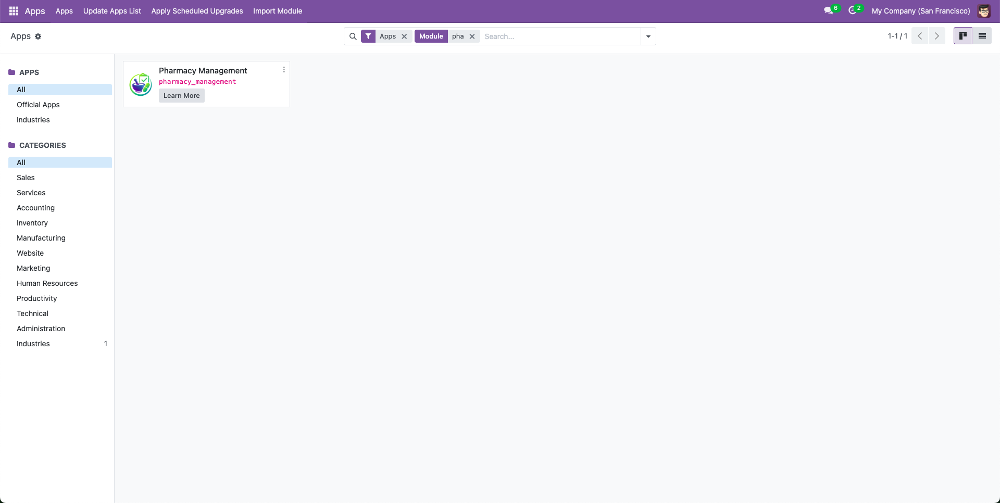
Apps menu showing Pharmacy Management module ready for installation
2.2 Configure User Defaults
Pro Tip
Setting default hospitals for users will automatically pre-fill hospital fields when creating new records, saving time and reducing errors.
Screenshot: User Default Hospital Configuration
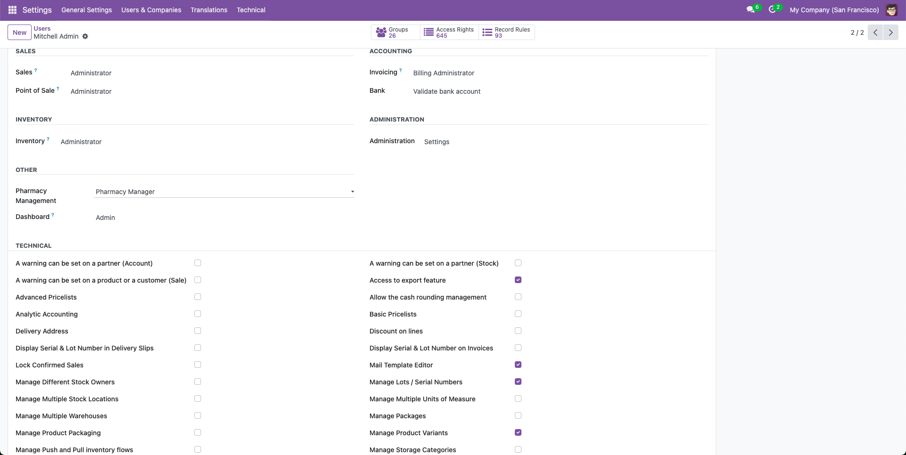
Configure default hospital for users in Settings → Users & Companies → Users
3. Hospitals & Pharmacies
3.1 Creating a Hospital
- Name: Hospital name (e.g., "City General Hospital")
- Code: Unique hospital code
- Company: Select the company (required)
- Address: Link to a contact/partner for address
- Default Warehouse: Select warehouse for stock operations
3.2 Creating Pharmacy Branches
- Hospital: Select parent hospital
- Name: Pharmacy branch name
- Code: Unique code (must be unique per company)
- Company: Select company
- Warehouse: Select warehouse (location auto-derived)
- Pricelist: Default pricelist for sales
Screenshot: Hospital Form View
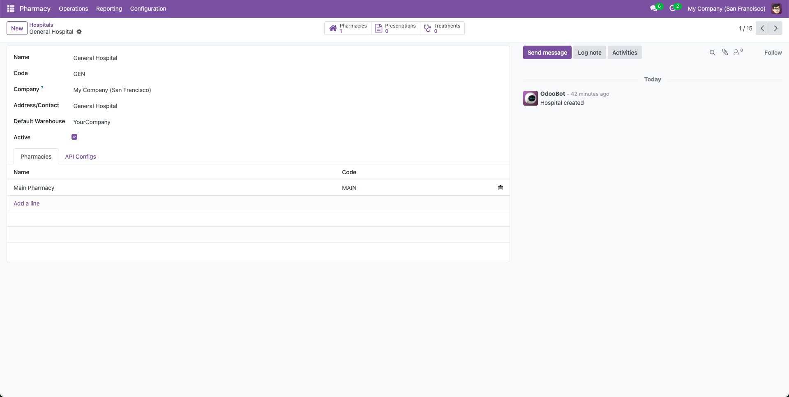
Hospital form showing name, code, company, warehouse, and smart buttons
Screenshot: Pharmacy Kanban View

Pharmacy kanban view displaying prescriptions today, expiring lots, and shortage alerts
3.3 Viewing KPIs
Each pharmacy displays real-time KPIs on the kanban view:
- Prescriptions Today: Number of prescriptions created today
- Expiring Lots: Stock lots expiring in next 30 days
- Shortage Alerts: Drugs below minimum stock threshold
4. Patients & Doctors
4.1 Creating Patients
- Name: Patient full name
- Patient Code: Auto-generated (unique per company)
- Patient Type: Adult or Pediatric
- Gender: Male/Female/Other
- Birth Date: Date of birth
- Contact: Link to res.partner for contact details
- Insurance: Insurance company
- Blood Type: For medical records
- Allergy Note: Important allergy information
4.2 Setting Up Doctors/Prescribers
- License Number: Medical license (unique per company)
- Specialty: Medical specialty
- Default Pharmacy: Default pharmacy for prescriptions
Smart Features
The system automatically tracks:
- Total prescriptions written by each doctor
- Prescriptions at doctor's default pharmacy
- Patient prescription and treatment history
Screenshot: Patient Kanban View
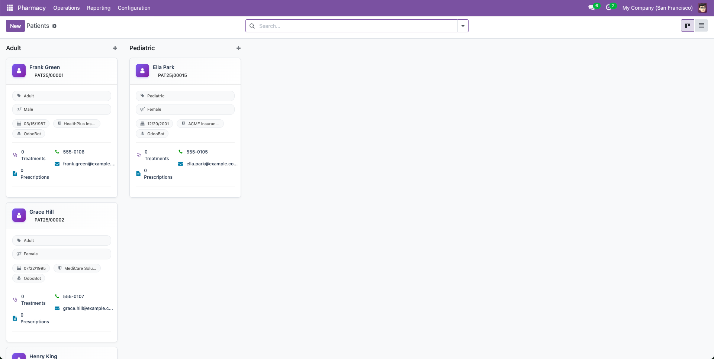
Patient kanban view showing patient information, treatment count, and prescription count
Screenshot: Doctor Form View
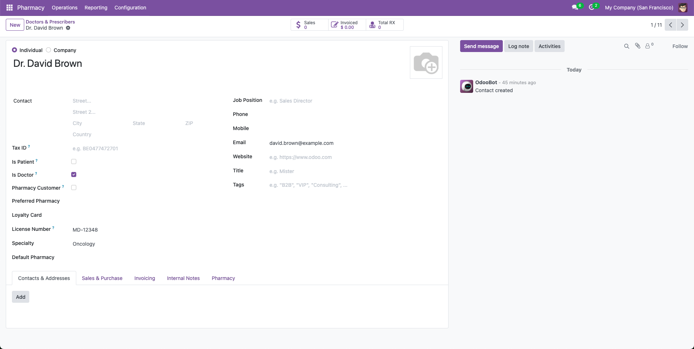
Doctor form showing is_doctor flag, license number, specialty, and default pharmacy
5. Drug Management
5.1 Creating Drug Categories
5.2 Adding Drugs
- Drug Category: Select category
- Prescription Required: Check if prescription needed
- Controlled: Check if controlled substance
- Storage Temperature: Min/Max storage temps
- Hospitals: Select hospitals where available
- Pharmacies: Select pharmacy branches
5.3 Drug Coverage Configuration
- Min Qty: Minimum stock level (triggers shortage alert)
- Target Qty: Target stock level
- Max Qty: Maximum stock level
Screenshot: Drug Form View
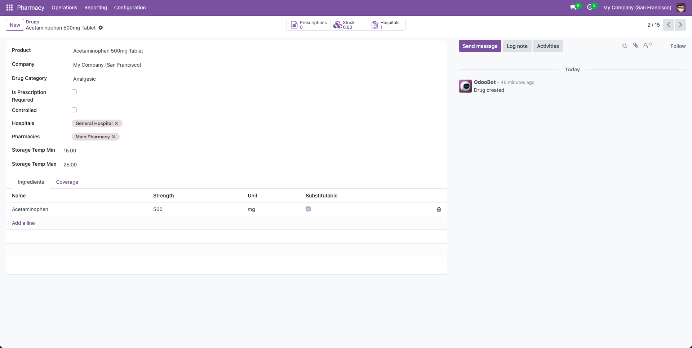
Drug form showing product link, category, prescription requirement, controlled flag, and hospital/pharmacy associations
Screenshot: Drug Kanban View
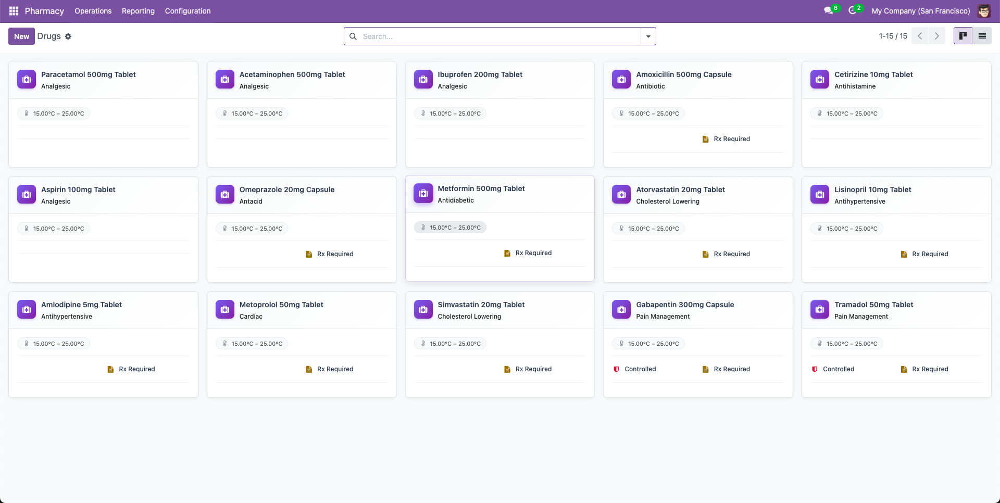
Drug kanban view displaying drugs with category, prescription requirement, and stock information
Screenshot: Drug Coverage Configuration
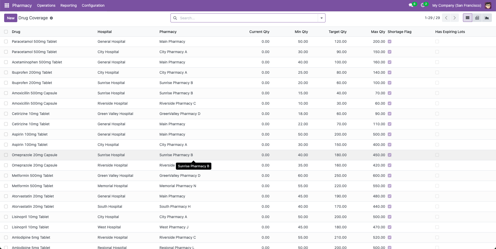
Drug coverage form showing hospital, pharmacy, and stock threshold settings
6. Prescription Workflow
6.1 Creating a Prescription
- Hospital: Auto-filled from user default
- Pharmacy: Select pharmacy branch
- Patient: Select patient (must have is_patient=True)
- Doctor: Select prescribing doctor (must have is_doctor=True)
- Date Prescribed: Prescription date
- Click Add a line in the Lines section
- Select Drug
- Enter Dosage instructions
- Set Quantity Prescribed
- Select Unit of Measure
6.2 Prescription Workflow
Step 1: Approve Prescription
Step 2: Create Delivery Picking
Step 3: Dispense Prescription
- Sets qty_dispensed = qty_prescribed for all lines
- Creates picking if not already created
- Changes state to "Dispensed"
Step 4: Generate Invoice
Automatic Features
- Invoice automatically includes all dispensed drugs
- Uses product list prices
- Links invoice to prescription for traceability
Screenshot: Prescription Form View
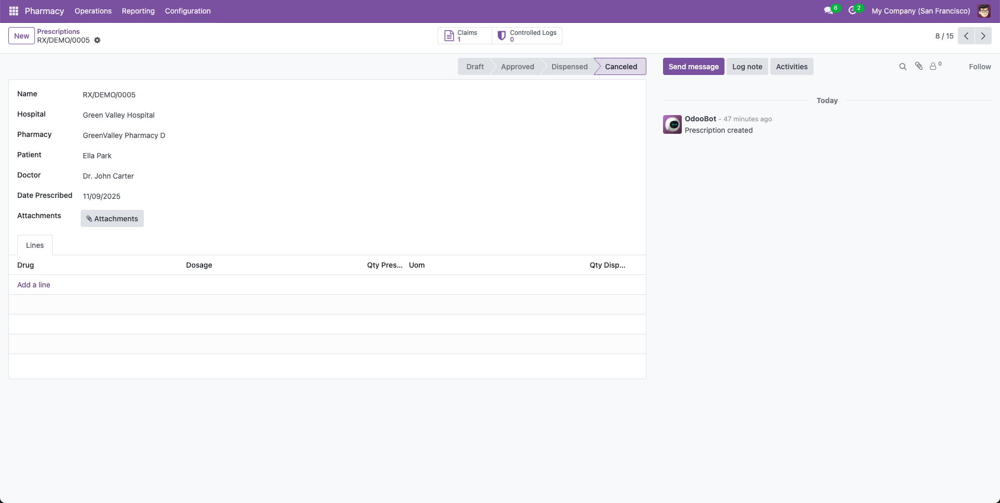
Prescription form showing header information and prescription lines with drugs and quantities
Screenshot: Prescription Kanban View
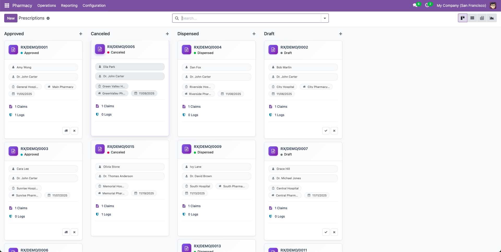
Prescription kanban view showing cards grouped by state (Draft, Approved, Dispensed) with patient and doctor info
Screenshot: Prescription Workflow Buttons
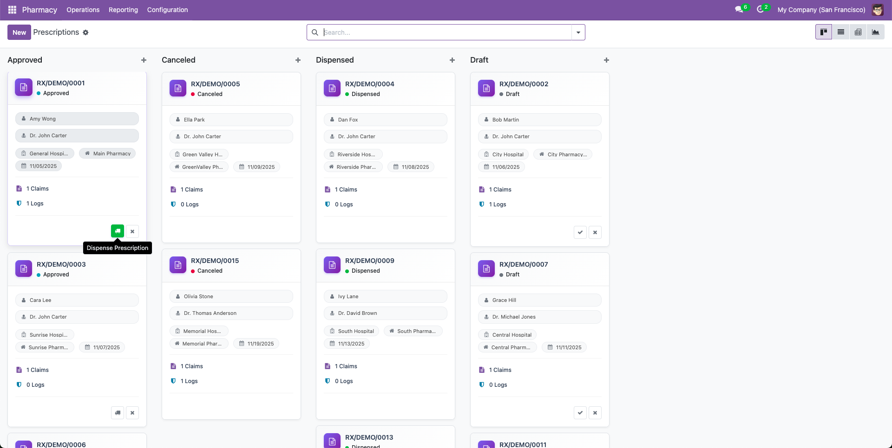
Prescription form action buttons: Approve, Create Picking, Dispense, and View Invoice
Screenshot: Prescription Lines Detail
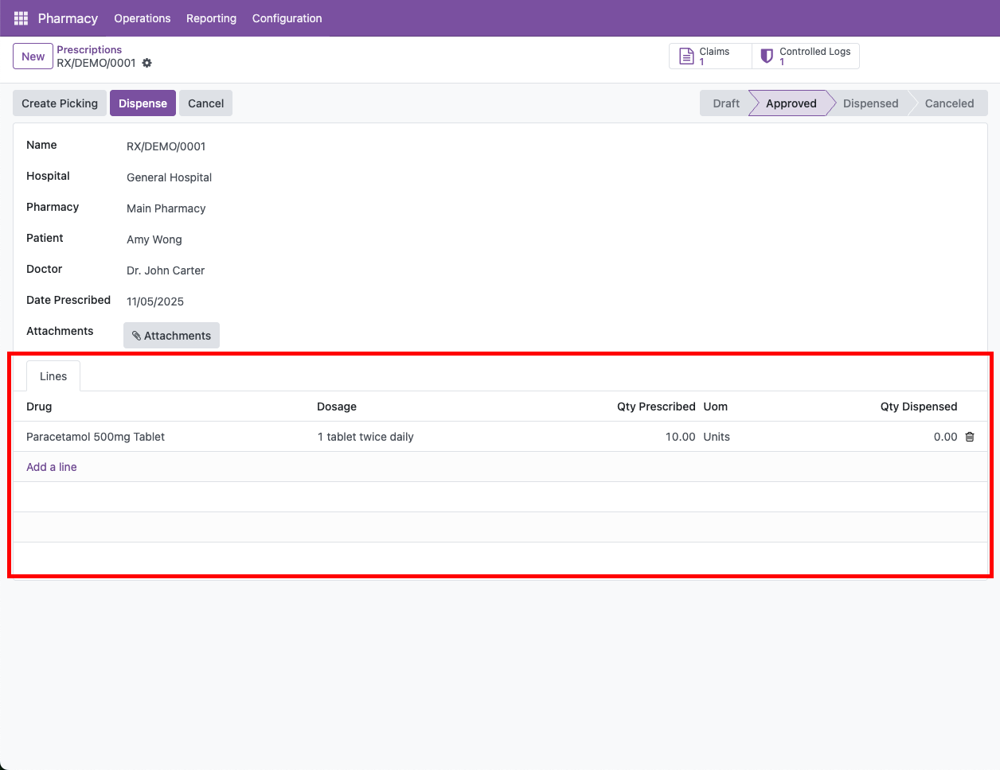
Prescription lines section showing drugs with prescribed quantities, dispensed quantities, and dosage instructions
7. Insurance Claims
7.1 Creating an Insurance Claim
- Insurance Company: Select insurance provider
- Amount Claimed: Enter claim amount
7.2 Claim Workflow
Screenshot: Insurance Claim Form
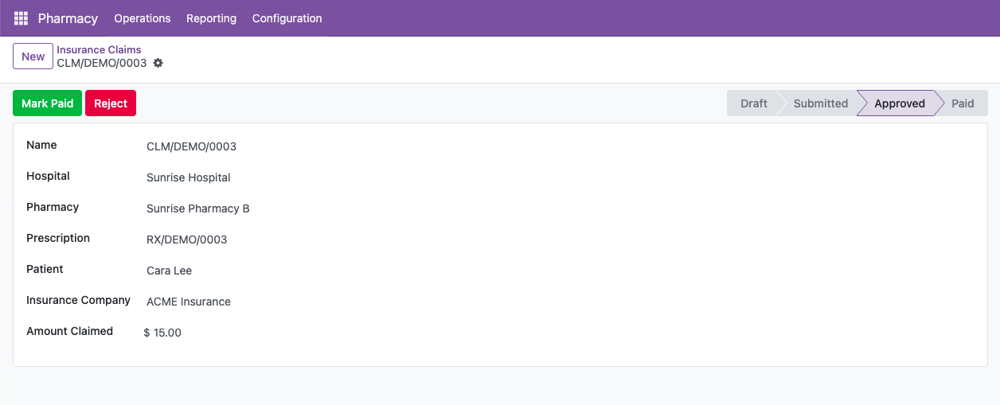
Insurance claim form showing prescription link, patient, insurance company, and claim amount
8. Controlled Drug Logging
8.1 Logging Controlled Drug Transactions
- Hospital: Select hospital
- Pharmacy: Select pharmacy branch
- Drug: Select controlled drug
- Quantity: Enter quantity (must be > 0)
- Action Type: Dispense/Return/Destroy
- User: Auto-filled with current user
- Notes: Additional information
Screenshot: Controlled Log Form
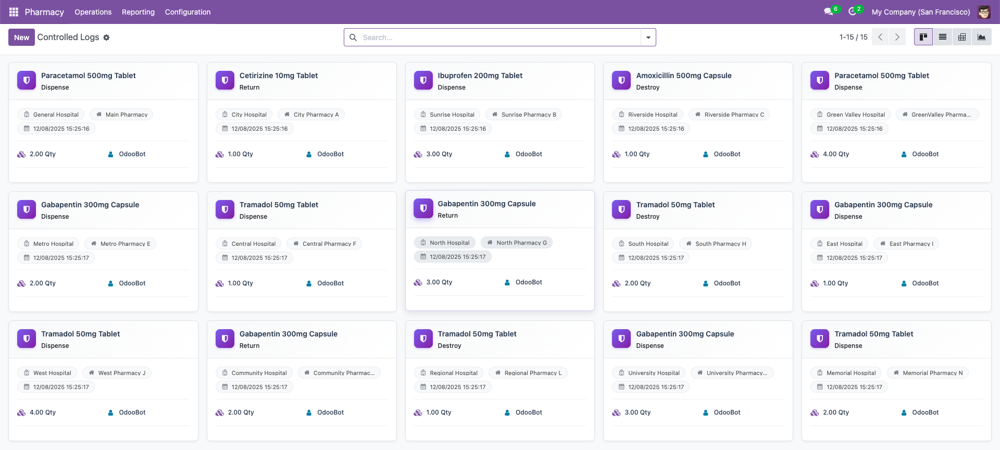
Controlled log form showing hospital, pharmacy, drug, action type (Dispense/Return/Destroy), quantity, and user
9. Treatment Management
9.1 Creating a Treatment
- Patient: Select patient
- Hospital: Select hospital
- Pharmacy: Select pharmacy (optional)
- Responsible: Assigned doctor/user
- Stage: Auto-filled with default stage
- Start Date/Time: Treatment start
9.2 Treatment Workflow
Treatments move through stages defined in Pharmacy → Setup → Treatment Stages:
- Draft: Initial creation
- Active: Treatment in progress
- Done: Treatment completed (closed stage)
- Cancelled: Treatment cancelled
9.3 Telemedicine Support
Screenshot: Treatment Kanban View
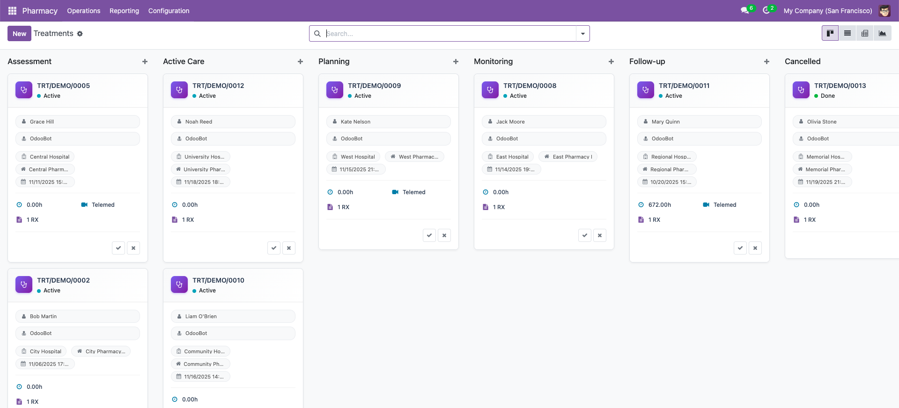
Treatment kanban view showing treatments grouped by stage with patient and hospital information
Screenshot: Treatment Form View
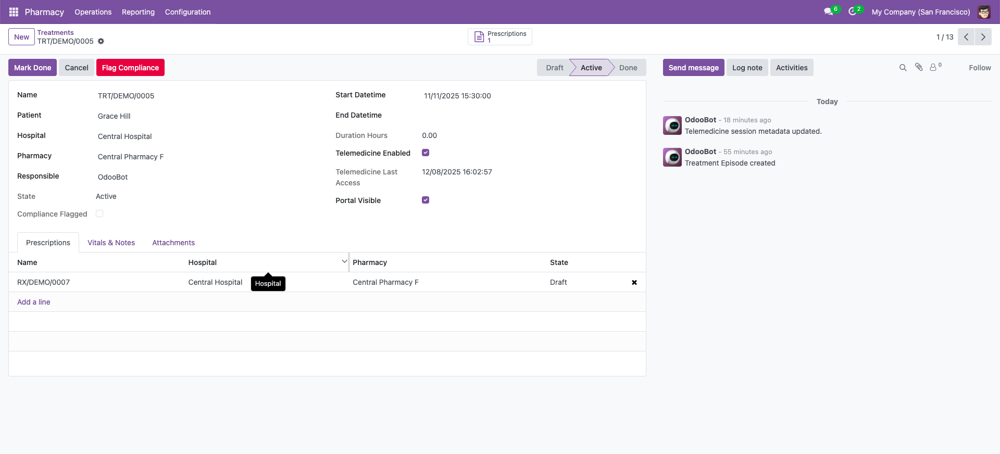
Treatment form showing patient, hospital, stage, start/end datetime, and linked prescriptions
10. Inventory & Stock
10.1 Stock Lots & Expiry Tracking
- Hospital: Hospital where lot is located
- Pharmacy: Pharmacy branch
- Expiry Date: Product expiry date
- Recall Flag: Mark if recalled
- Temperature Log: JSON field for temp monitoring
10.2 Expiry Alerts
The system automatically identifies lots expiring in the next 30 days:
10.3 Stock Shortage Alerts
Screenshot: Expiring Lots Report
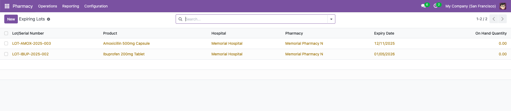
Expiring lots report showing lots expiring in next 30 days with product, hospital, pharmacy, and expiry date
Screenshot: Shortage Alerts Report
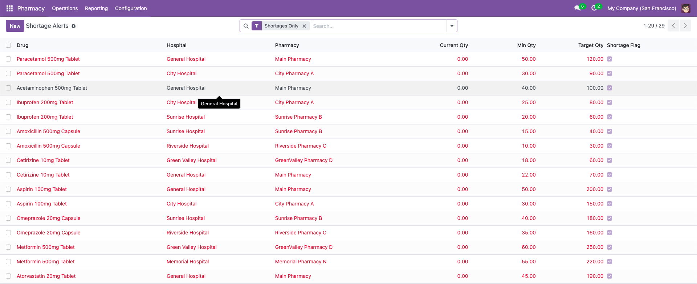
Shortage alerts report showing drugs below minimum stock threshold with current vs minimum quantities
11. Portal Requests
11.1 Managing Portal Requests
- Open request
- Review attachments
- Change state to Processing
- Complete and mark as Done
11.2 Request Types
- Upload: Patient uploads prescription or document
- Reservation: Drug reservation request
- Query: Patient inquiry
Screenshot: Portal Request Kanban
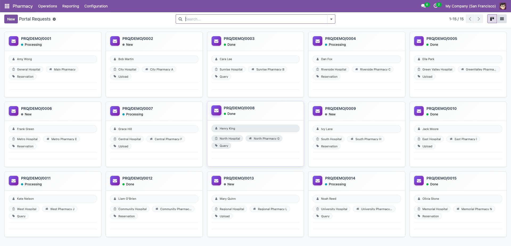
Portal request kanban view showing requests grouped by state (New, Processing, Done) with attachments
12. Reporting & Analytics
12.1 Available Reports
- Prescription Volume: Graph view of prescriptions over time
- Insurance Claims: Claims analysis by status
- Controlled Activity: Controlled drug transaction logs
- Drug Coverage: Stock coverage analysis
- Treatment Progress: Treatment stage distribution
- Shortage Alerts: Drugs below minimum stock
- Expiring Lots: Lots expiring in next 30 days
- Availability Report: Staff availability tracking
12.2 Pivot Views
Many models support pivot views for advanced analysis:
- Prescriptions by Hospital/Pharmacy/State
- Controlled logs by Drug/Action Type
- Insurance claims by Status/Company
- Treatments by Stage/Hospital
Screenshot: Prescription Volume Graph
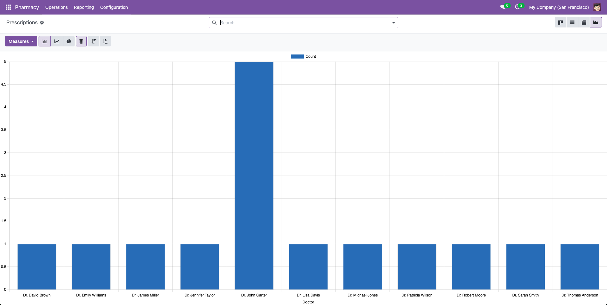
Prescription volume graph showing prescriptions over time by hospital or pharmacy
Screenshot: Prescription Pivot View
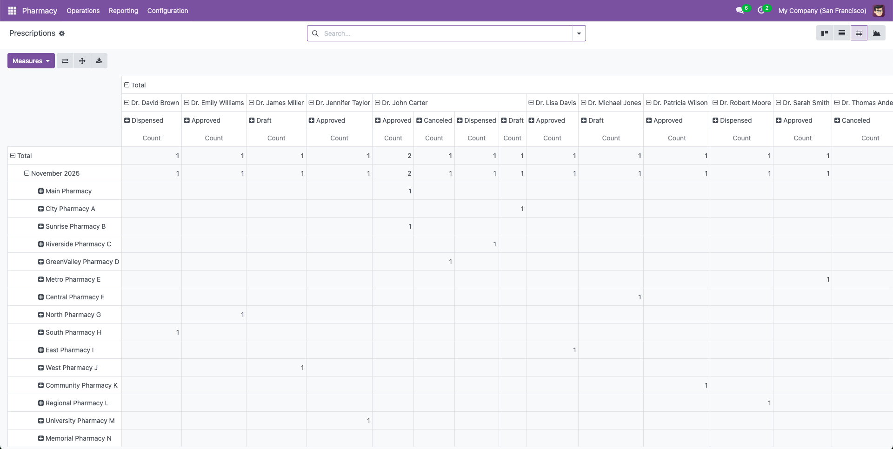
Prescription pivot view analyzing prescriptions by hospital, pharmacy, and state
13. Tips & Best Practices
13.1 Data Entry Tips
- Use Defaults: Set user default hospitals to speed up data entry
- Link Partners: Link patients to res.partner for unified contact management
- Configure Warehouses: Always set warehouses on hospitals and pharmacies
- Set Coverage: Configure drug coverage for automatic shortage alerts
13.2 Workflow Best Practices
- Approve Before Dispensing: Always approve prescriptions before dispensing
- Log Controlled Drugs: Immediately log all controlled substance transactions
- Link Treatments: Link prescriptions to treatments for complete patient history
- Review Expiry Alerts: Regularly check expiring lots report
13.3 Performance Tips
- Batch Operations: Use kanban views for quick bulk actions
- Smart Buttons: Use smart buttons to navigate related records
- Filters: Save frequently used filters for quick access
- Group By: Use group by in kanban views for better organization
13.4 Common Issues & Solutions
Solution: Ensure both hospital and pharmacy have warehouses set
Solution: Ensure res.partner has is_patient=True or is_doctor=True flag set
Solution: Check that sequence "pharmacy.prescription" exists in Settings → Technical → Sequences
Need Help?
For additional support, please contact:
+91 (942) 867-7503
WhatsApp Support Available
Pharmacy Management Module
Developed by WebbyCrown Solutions
Version 17.0.1.0.0